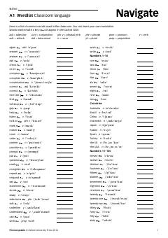

NAIngliz tili boshlang'ich A1 darajasi uchun asosiy so'zlar ro'yxati.
Ushbu hujjat ingliz tilini boshlang'ich A1 darajada o'rganuvchilar uchun mo'ljallangan so'zlar ro'yxatini o'z ichiga oladi. Unda sinf xonasida ishlatiladigan so'zlar, raqamlar, oylar, kunlar va asosiy mavzularga oid lug'atlar fonetik transkripsiya bilan taqdim etilgan.